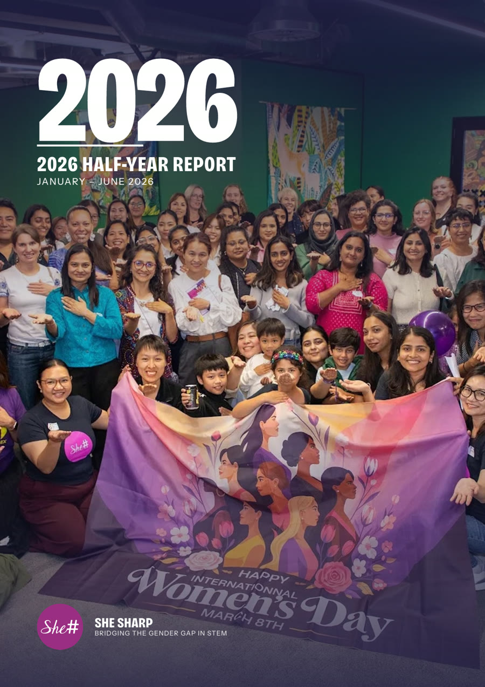
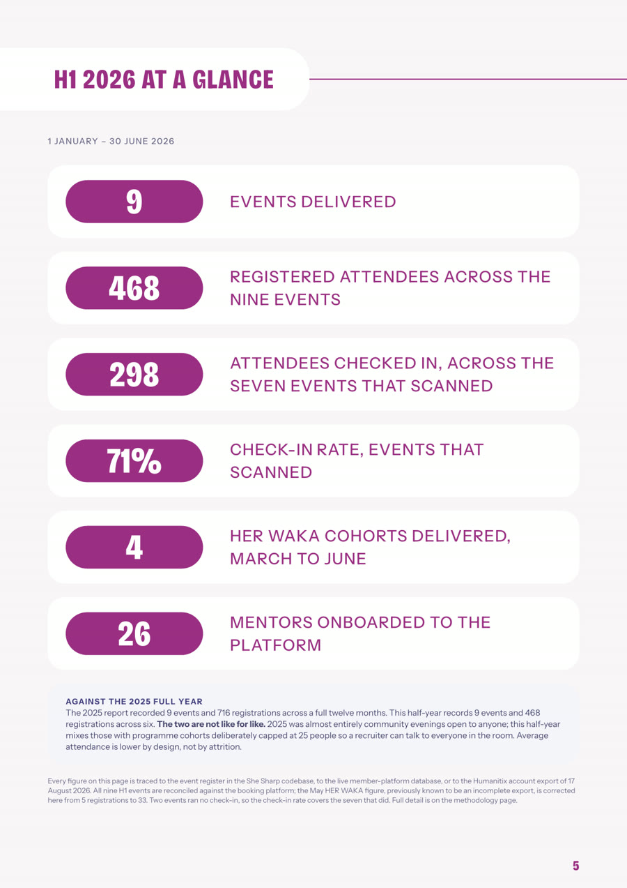
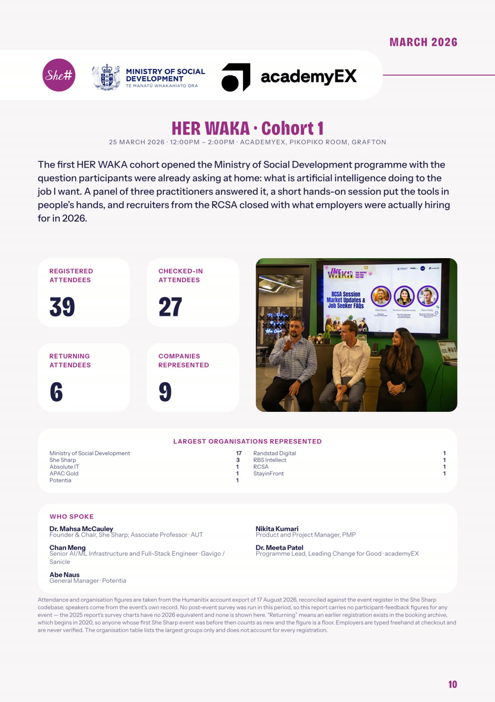
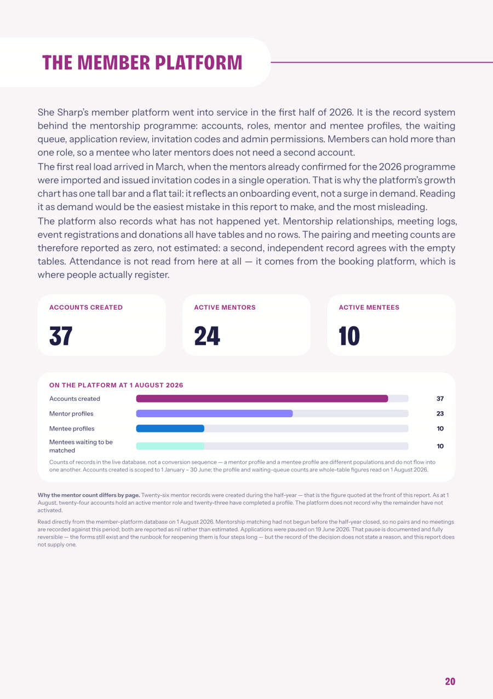
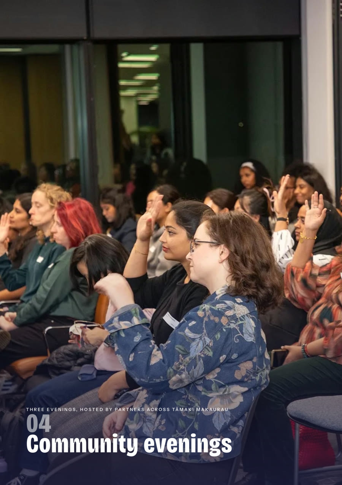

Typeset PDF report · She Sharp
2026 Half-Year Report
31 pages
Typst + CeTZ
every figure source-traced

p.1 · cover

p.5 · at a glance

p.10 · cohort page

p.20 · member platform

p.16 · chapter opener